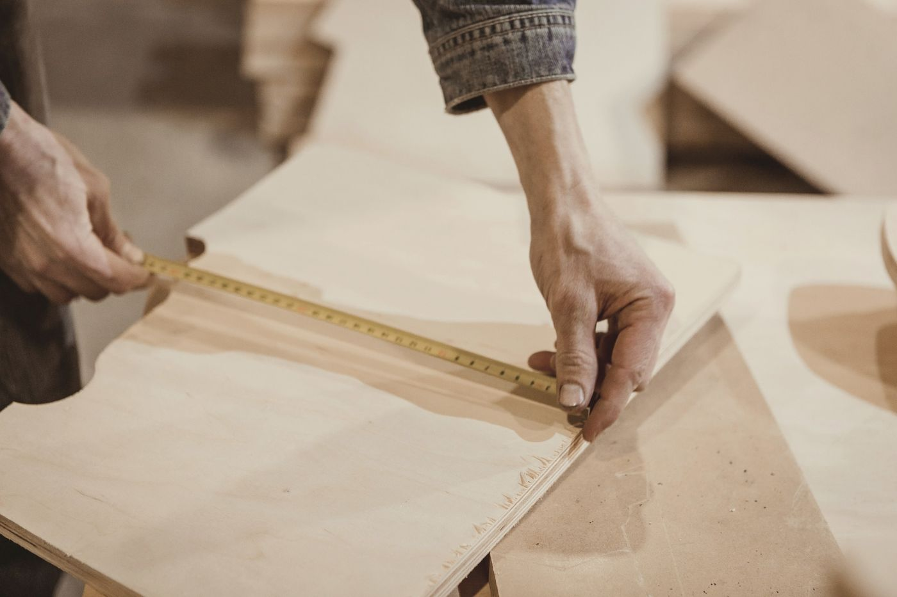

Näin työ etenee
Tavallinen keittiö valmistuu 8–10 viikossa mittauksesta. Sama järjestys pätee isompiinkin töihin.

- 01
Yhteydenotto
Viikko 0Lähetä pohjapiirros tai valokuvat ja muutama mitta. Vastaamme kahden arkipäivän kuluessa ja kerromme hinta-arvion viikon sisällä.
Jos keittiö on osa isompaa remonttia, kerro myös muiden töiden aikataulu, niin varaamme verstaalta oikeat viikot.
- 02
Mittaus
Viikko 1Mittaamaan tulee Aaro tai Veera. Seinät mitataan laserilla ja rullamitalla, ja suoruus tarkistetaan vesivaa'alla. Vanhoissa taloissa seinät ovat usein 10–20 mm vinossa, ja se otetaan huomioon peitelevyissä.
Käynti kestää noin puolitoista tuntia ja on maksuton 40 km:n säteellä verstaasta.
- 03
Piirustukset
Viikot 1–3Piirrämme pohjan, julkisivut ja leikkaukset mittakaavassa 1:20. Hintaan kuuluu kaksi muutoskierrosta, ja ovesta teemme näytepalan valitulla puulla ja pinnalla.
Kun piirustukset on hyväksytty, lähetämme tilausvahvistuksen ja ennakkolaskun (30 %).
- 04
Verstas
Viikot 4–8Rungot ja ovet sahataan CNC-koneella suoraan piirustuksista. Laatikot kootaan sormiliitoksin, ja maalattuihin oviin tulee pohjamaali ja kaksi pintamaalia.
Kaapit voi tulla katsomaan verstaalle ennen pakkaamista. Useimmat tulevat, koska kahvia on aina.
- 05
Asennus
Viikot 9–10Neljän metrin keittiön asennus kestää kahdelta puusepältä yleensä kaksi päivää. Sähkö- ja putkimies tulevat toisena päivänä.
Kivitaso mitataan vasta, kun rungot ovat paikallaan, ja sen valmistus kestää 2–3 viikkoa. Sillä välin keittiössä on vanerinen väliaikaistaso.
- 06
Takuu ja säätö
Vuoden päästäRungoilla, laatikoilla ja saranoilla on viiden vuoden takuu. Ensimmäisen vuoden aikana käymme säätämässä ovet kerran maksutta, koska puu elää ensimmäisen lämmityskauden aikana.
Ennen mittausta tarvitsemme
- Pohjapiirros tai omat mitatKäsin piirretty luonnos kelpaa hyvin
- Kodinkoneiden mallitIntegroitavista koneista tarvitsemme asennusmitat
- Sähkö- ja vesipisteiden paikatValokuva seinästä riittää, jos pisteet näkyvät
- Muiden remonttitöiden aikatauluLattia ja maalaus tehdään yleensä ennen asennusta
- BudjettiHaarukka riittää, ja sen avulla osaamme ehdottaa oikeat materiaalit
Lähetä pohjapiirros, niin kerromme hinta-arvion viikon sisällä.
Alkuun riittää valokuva vanhasta keittiöstä ja pari mittaa. Vastaamme kahden arkipäivän kuluessa.
048 562 1913, arkisin 8–16
hei@pihka-keittiot.example